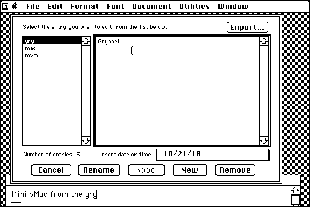

Download
type-it-for-me-451.zip (98K) TypeIt4Me 4.5.1 repackaged into a zipped hfs disk image and checksum file. The disk image can be mounted with Mini vMac.
type-it-for-me-451.hqx (131K) TypeIt4Me 4.5.1 in the original format.
copyright: Riccardo Ettore
mod date: Aug 20, 1995
license: shareware
Replaces abbreviations with full text as you type. You define the abbreviations and the full text. TypeIt4Me 6 for OS X is still for sale from the original author.

If you find these downloads useful, please consider helping the Gryphel Project, which hosts them.
Here are the md5 checksums for the downloads, signed with Gryphel Key 5:
--------- GRY SIGNED TEXT --------- 61944949a58a1fee7cef265f04f432d1 type-it-for-me-451.zip 612991977a0012aae1e37fa533a6b560 type-it-for-me-451.hqx ------- BEGIN GRY SIGNATURE ------- Gry/4Xa8CFcUzxdN/PIRD3x38eH8nWrPVsqPikL37ZOjiq/yqmZhGyIEiRO7st2f dk7BZydriBmFHeoP9UilpVGIeebF2zrYctV+5Dv5R+utNXfAfqMW2niQ5AzK7UHB AVCCKI9yuvMp6huSK7gmzCAxPR+ldduLxSUpiUPbo0cHJPAT3lWHOCSpDzkpabc1 -------- END GRY SIGNATURE --------